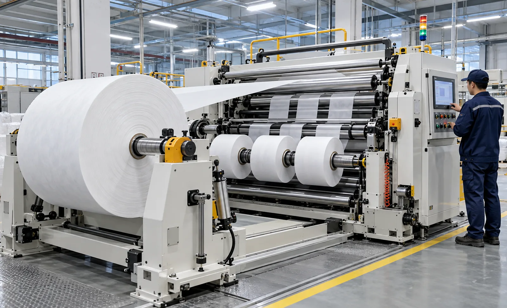
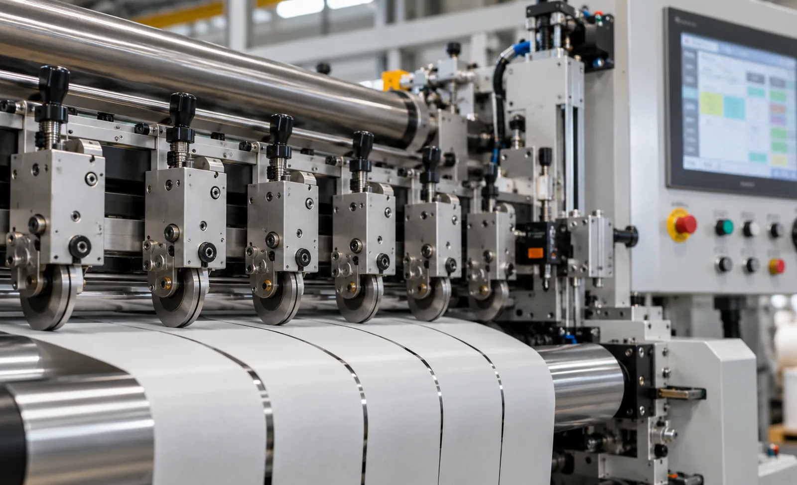

Published September 28, 2026 | By HDPTH Technical Editorial Team

Automation level is a project decision because it changes purchase price, guarding, training, spares, commissioning time and who is responsible for setup repeatability. Buyers who compare headline prices without comparing the scope of automation are not comparing the same machine.
Why the decision belongs in the project, not the brochure
Suppliers describe machines by features: automatic knife positioning, turret rewind, core loading, non-stop operation. Each has a purpose, a cost and a maintenance implication. The relevant question is not whether a function exists, but whether your production triggers it often enough to pay for it. Two plants of the same nominal width can still need different automation: a hygiene producer running one product for weeks values uptime inside the run, while a converter with many short orders values the time between runs.
Automation and quality are linked but not identical. Automatic functions reduce operator-to-operator variation, which supports repeatability; they do not replace sound mechanical design or a suitable tension concept. Ask for trial evidence and FAT test plans regardless of the automation level.
What each automation level typically includes
Manual operation
Manual machines rely on operators for threading, knife positioning, core loading and finished-roll handling, while drives and PLC still control speed, tension and length counting. This level suits long production runs, tolerant materials and plants with skilled, available operators. Its strengths are lower purchase price and simpler mechanics; its exposure is setup variation and changeover time, both of which grow with lane count and order frequency.
Semi-automatic operation
Semi-automatic packages automate the tasks that are most repetitive or most variable: powered knife positioning from recipe values, motorized core loading, automatic tension recipe recall and assisted web threading. The operator remains in the loop for splices, doffing and supervision. For many B2B converters this is the economic middle.
Fully automatic operation
Fully automatic machines chain these functions into sequences: start, splice, speed ramp, cut, doff and restart with minimal operator intervention. Typical elements include automatic core loading, threading, splicing, turret or duplex rewind and recipe-driven knife setup. This level suits high lane counts, frequent orders, premium materials or sites where labor is scarce, but it demands a stronger upfront engineering effort: safety concept, control platform, diagnostics and a disciplined spares plan.
Practical comparison for buyers
| Buyer Criterion | Manual | Semi-Automatic | Fully Automatic |
|---|---|---|---|
| Changeover work | Operator performs nearly all setup | Machine handles positioning and loading; operator assists | Machine executes most of the sequence |
| Setup repeatability | Depends on operator skill and documentation | Recipe-driven where specified | Recipe-driven with sequence control |
| Purchase price | Lowest | Intermediate | Highest |
| Maintenance and spares | Simplest | Moderate | Most demanding; needs a spares plan |
| Best fit | Long campaigns, tolerant webs | Mixed order books, frequent lane changes | Many short orders, tight tolerances, labor constraints |
The boundaries are not fixed: a well-specified manual machine with good recipe storage can beat a badly configured automatic line at changeover. Compare specific quotations function by function rather than by label.
Not sure which level fits your order book?
Send HDPTH your shift pattern, order sizes, lane counts, materials and quality targets for a project-specific automation recommendation.
Discuss Your ApplicationWhere the payback comes from
Automation returns money through a few channels: operator time freed by moving tasks from person to machine, changeover minutes that become production hours, less start-of-run scrap from repeatable recipes, and safer handling of heavy rolls.
Build the business case from your own records. Count changeovers per week, estimate minutes saved per changeover at each level, and multiply by the loaded labor cost and the value of an extra production hour. Add conservative scrap improvement, then compare against the price difference, spares and added maintenance. If the numbers only work with optimistic assumptions, choose the lower level.
Material, speed and shift factors
Material behavior interacts with automation. Stretch-sensitive nonwovens and thin films benefit from automatic tension recipe recall, because the correct profile is applied identically every run. Heavy parent rolls push buyers toward automatic core loading and driven unwind, since manual handling becomes both a safety and a quality issue. Very light webs may justify automatic threading, because a manual thread is where damage and misrouting often start. Shift structure matters too: a plant that struggles to recruit operators often finds automation cheaper than orders waiting for a person. Data requirements increasingly drive the decision as well—semi-automatic and fully automatic controls can store and report recipes, alarms and production counts, so define what your customers and auditors expect before fixing the control scope.
Plan the upgrade path from day one
Needs change. A machine bought manual today may need powered knife positioning or automatic core loading in three years, and retrofit is realistic only if the base design anticipated it. Frame capacity, drive sizing, control platform I/O, guarding and layout all limit what can be added later.
Put the upgrade path in the specification. Ask the supplier to state which functions can be added later, what pre-installed interfaces cost, and which would require a new machine—this small paragraph in the RFQ often saves a much larger expense later. The automatic knife positioning buyer guide and the turret rewinder buyer guide describe two commonly retrofitted functions.
RFQ checklist for automation level
- Orders per week, average run length and planned changeovers per shift.
- Current changeover duration, measured, not estimated.
- Loaded operator cost per shift and recruitment situation.
- Quality requirements: roll hardness, width tolerance, start-of-run scrap limits.
- Maximum finished roll weight and required unloading method.
- Which functions must be included now, and which may be added later.
- FAT tests that will prove each automatic function with your materials.
Proving automation at FAT
Automatic functions earn their price only if they work in your duty cycle, so test them exactly as purchased. Run the full changeover sequence—recipe recall, knife positioning to the agreed tolerance, core loading, threading, splice, run, doff and restart—several times, recording the time of each step and inspecting the first and last rolls for width accuracy and roll formation.
Test the exceptions as well as the happy path: a missing core, a web break mid-run, an operator interrupting a sequence. Agree the alarm list and fault behavior of each automatic step before shipment. A documented FAT is the buyer's best protection that the automation level quoted is the machine delivered.
Common specification mistakes
- Buying automation as prestige: functions that are never triggered do not pay back.
- Comparing prices without scope: two quotes may differ in tens of thousands of dollars of automation content.
- Underestimating training: automatic lines still need competent operators and supervisors.
- Forgetting the upgrade path: retrofit without pre-planned interfaces becomes a rebuild.
- Skipping fault testing at FAT: sequences that only work under ideal conditions will not survive production.
Buyer FAQ
Is a fully automatic slitter rewinder always the better purchase?
No. A fully automatic machine pays back when shift labor, changeover frequency, quality demands and production volume justify the higher purchase price. A plant running few recipes on long campaigns may never recover the difference, while a plant running many short orders per shift often will. Decide from your own order profile and cost data.
Which functions are usually automated on a slitter rewinder?
Typical functions include knife positioning, core loading, web threading, splice initiation, roll unloading, tension recipe recall and reject-lane handling. Each function can be specified independently, so two machines described as semi-automatic may contain very different equipment.
How do I calculate the return on an automation upgrade?
Compare the fully loaded operator time per changeover and per shift at each automation level, multiply by your changeover count and shift pattern, then add gains from faster ramps, fewer defects and less scrap. Subtract the difference in machine price, spares and maintenance. Use conservative assumptions and verify each input with your own production records.
Does more automation reduce product quality risk?
Automation removes operator-to-operator variation in knife setup, tension recipes and roll doffing, which helps repeatability. It does not fix poor mechanical design, wrong knife systems or an unsuitable tension concept. Judge quality capability from trials and FAT evidence, not from the automation level alone.
Can an automation level be upgraded later?
Often yes, but only if the base machine was designed for it. Frame loading capacity, drive power, control platform, safety guarding and layout must support the added functions. Agree the intended upgrade path and required interfaces in the original specification so retrofit does not become a rebuild.
Sources
- AIMCAL: Converting industry technical resources
- TAPPI: Paper and converting industry technical resources
- HDPTH: Slitter rewinder FAT checklist
- HDPTH: Automatic knife positioning buyer guide
- HDPTH: Short-run changeover buyer guide

Define the automation package before you compare prices
Send your order profile, materials and target functions. HDPTH will propose a slitting and rewinding configuration at the level your production actually needs.
Request a Configuration Review